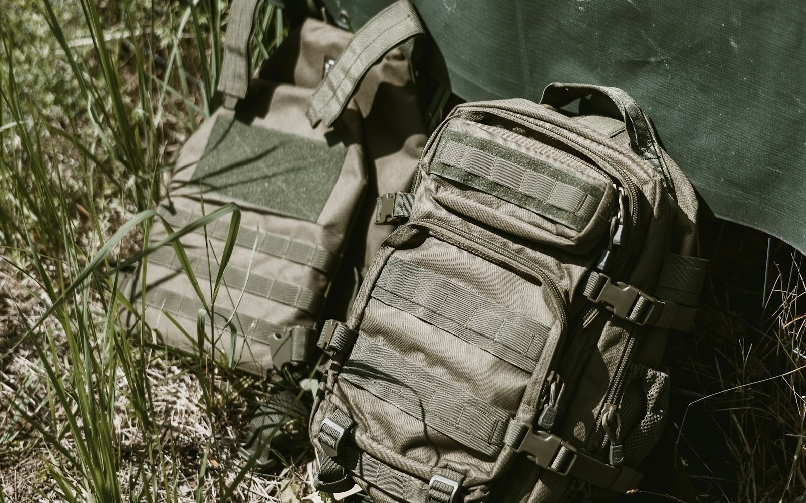

經濟系統
打得贏、帶得對、賺得穩：烽火地帶的經濟三本柱，用 CS2 的概念對照說明。

社群攻略的具體數值常有出入，這裡講的是大原則；精確數字請以遊戲內說明為準。
一、護甲等級 vs. 子彈穿透等級
在 CS2，有沒有穿甲只差一點傷害，爆頭幾乎都是致命的。三角洲完全不同：護甲和子彈各有等級，誰的等級高，大致決定誰贏。
規則
| 情況 | 結果 |
|---|---|
| 子彈等級 > 護甲等級 | 子彈打得穿，傷害正常打進身體 |
| 子彈等級 = 護甲等級 | 灰色地帶：能打進一部分傷害，但會被削弱 |
| 子彈等級 < 護甲等級 | 大多被擋下，主要只是磨掉對方的護甲耐久 |
耐久度
- 每一發子彈都會磨損護甲耐久，不管有沒有穿透。
- 耐久歸零，那件甲就等於沒穿，後面的子彈全部打進身體。
- 所以低等子彈也不是完全沒用：連續命中可以把甲打爛，只是要花很多發。
實戰怎麼用
- 進場前先看自己的子彈等級。用低等子彈，就避免跟穿高等甲的人正面對槍。
- 交火前先看對方穿什麼甲。打不穿就不要硬拼：繞路、躲開，或等他跟別人打完。
- 打不穿甲時，打護甲沒保護到的部位，例如手腳。傷害雖然較低，但不會被甲吃掉。
- 好子彈留給重要的戰鬥。高等子彈很貴，可以專門留一個彈匣給硬仗。
- 出場後記得修甲。耐久不夠的甲，下一局等於半件甲。
CS2 類比：就像 CS2 的經濟局。eco 局拿手槍打全甲步槍，不是打不贏，而是要靠位置和時機；正面對拼一定虧。
二、學會看高價值物資
稀有度顏色
物資通常用顏色區分稀有度，一般是：
白‹
綠‹
藍‹
紫‹
金‹
紅
玩家口中的「大紅」，指的是佔 6 格以上的紅色高價值道具，一件就能讓整局大賺。
判斷原則：看「單格價值」
背包格子有限，所以重點不是「這東西多少錢」，而是「每一格值多少錢」：
- 一件佔 1 格、值 2 萬的小東西，比一件佔 6 格、值 6 萬的大東西更划算（每格 2 萬 vs. 每格 1 萬）。
- 背包滿了，先丟單格價值最低的，換成更好的。
- 有攻略指出，有些藍色小物資的單格價值也很穩，不一定只有紅色才值錢。
實戰怎麼用
- 最值錢的小東西放安全箱，死了也不會掉。
- 不要什麼都撿。翻找會發出聲音，也花時間，撿太多低價值物品反而增加被打的風險。
- 拿到大紅就認真考慮撤離。這時候風險和收益已經失衡，再貪通常是送給別人。
- 價格會隨版本和市場波動，拿不準的東西可以在交易行查即時價格。
CS2 類比：像決定要不要撿地上的 AWP。值錢，但撿起來的那幾秒和移動速度的代價，你要算得出來。
三、善用特勤處（經營系統）
是什麼
特勤處是你的基地，有多個製作設施：
| 設施 | 主要產出 |
|---|---|
| 技術中心 | 瞄具等配件 |
| 工作台 | 子彈等 |
| 製藥台 | 醫療品、護甲維修包 |
| 防具台 | 護甲、胸掛、背包 |
投入材料後，設施會用現實時間慢慢製作，就算你下線也會繼續做。
怎麼賺錢
- 自己做取代買：子彈、醫療品、維修包自己做，比在交易行買便宜，省下的就是賺到的。
- 做完拿去賣：有些成品在交易行比材料總價高，賣掉就是穩定收入。
- 讓設施不要閒著：每次上線先收成品、排下一輪，跟手機遊戲收菜一樣。下線前排長時間的製作最划算。
- 提前囤常用材料：有攻略建議，新賽季開始時材料需求大、價格容易漲，可以先囤一些常用材料。
- 升級設施：升級後能做更好的東西，或做得更快。
CS2 類比：CS2 沒有對應系統。可以想成「每天自動入帳的經濟局補助」：就算這局死光，倉庫還是穩定進帳，讓你敢帶好裝備進場。
三者怎麼串在一起
良性循環
- 特勤處穩定產出
- 有錢帶高等子彈和護甲
- 交火打得贏
- 活著帶出高價值物資
- 賣錢、升級特勤處，回到第一步，循環變強
新手常見的惡性循環
- 裝備太差，打不贏
- 死了，身上全掉
- 沒錢，下一局裝備更差
結論
烽火地帶的經濟三本柱是打得贏（護甲 vs. 子彈）、帶得對（物資）、賺得穩（特勤處）。新手最需要的是特勤處：即使這幾局一直輸，倉庫還是持續有收入，這是打破惡性循環的關鍵。